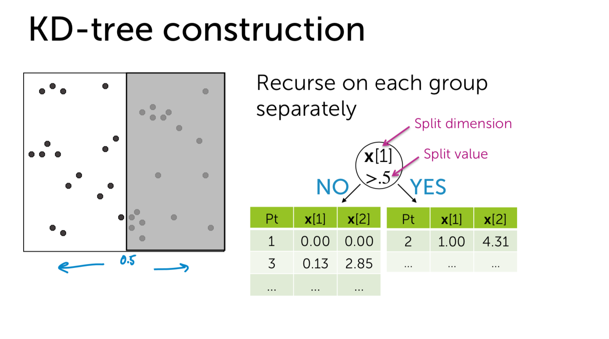
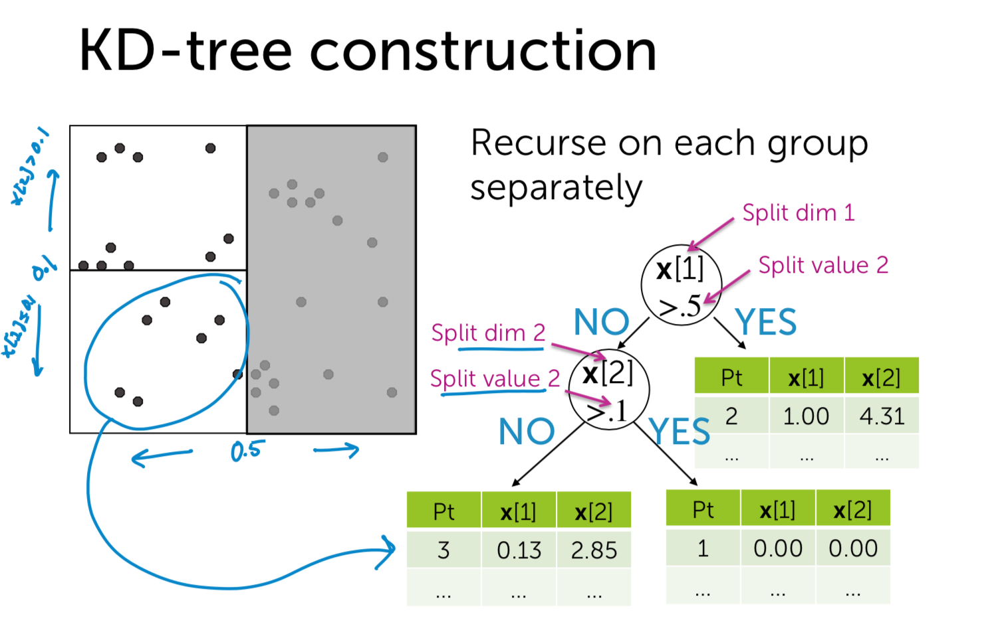
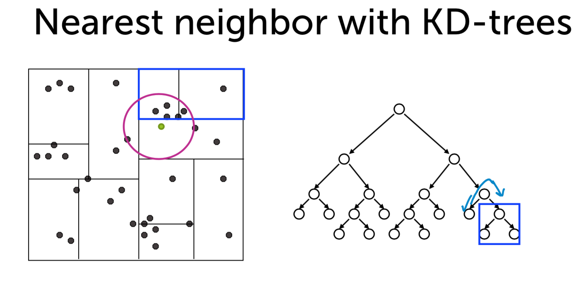
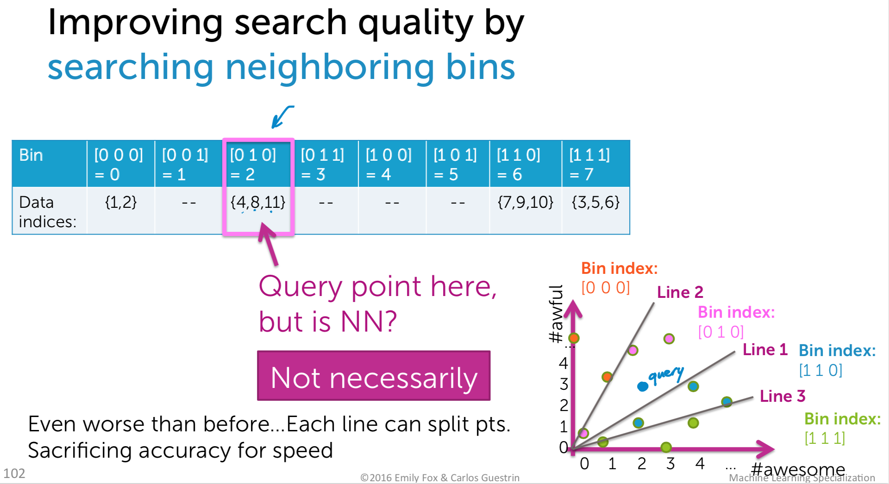
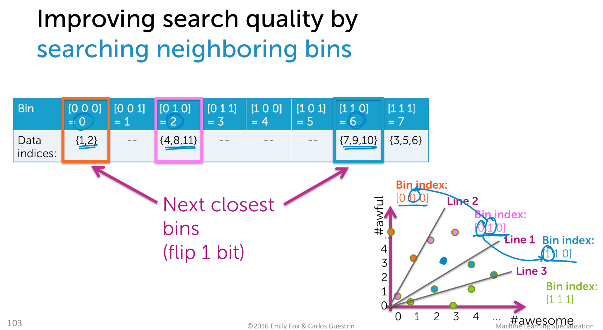

What is KDtree
- kd-tree或者k维树是计算机科学中使用的一种数据结构，用来组织表示k维空间中点集合。它是一种带有其他约束条件的二分查找树。kd-tree对于区间和搜索十分有用。
- 对于构造kd-tree二叉树有两个关键的问题：1）每次对子空间的划分时，怎样确定在哪个维度上进行划分；2）在某个维度上进行划分时，怎样确保在这一维度上的划分得到的两个子集合的数量尽量相等，即左子树和右子树中的结点个数尽量相等。
- Works well in low-medium dimensions
- Unlikely to have any data points close to query point
- Once nearby point is found, the search radius is likely to intersect many hypercubes in at least one dim
- Not many nodes can be pruned
- Can show under some conditions that you visit at least $2^{d}$ nodes
每次对子空间的划分时，怎样进行划分？
max invarince
最简单的方法就是轮着来，即如果这次选择了在第i维上进行数据划分，那下一次就在第j(j≠i)维上进行划分，例如：j = (i mod k) + 1。想象一下我们切豆腐时，先是竖着切一刀，切成两半后，再横着来一刀，就得到了很小的方块豆腐。
可是“轮着来”的方法是否可以很好地解决问题呢？再次想象一下，我们现在要切的是一根木条，按照“轮着来”的方法先是竖着切一刀，木条一分为二，干净利落，接下来就是再横着切一刀，这个时候就有点考验刀法了，如果木条的直径（横截面）较大，还可以下手，如果直径较小，就没法往下切了。因此，如果K维数据的分布像上面的豆腐一样，“轮着来”的切分方法是可以奏效，但是如果K维度上数据的分布像木条一样，“轮着来”就不好用了。因此，还需要想想其他的切法。
如果一个K维数据集合的分布像木条一样，那就是说明这K维数据在木条较长方向代表的维度上，这些数据的分布散得比较开，数学上来说，就是这些数据在该维度上的方差（invariance）比较大，换句话说，正因为这些数据在该维度上分散的比较开，我们就更容易在这个维度上将它们划分开，因此，这就引出了我们选择维度的另一种方法：最大方差法（max invarince），即每次我们选择维度进行划分时，都选择具有最大方差维度。
如何确保划分的左子树和右子树中的节点个数尽量相等。
use medium as pivot
假设当前我们按照最大方差法选择了在维度i上进行K维数据集S的划分，此时我们需要在维度i上将K维数据集合S划分为两个子集合A和B，子集合A中的数据在维度i上的值都小于子集合B中。首先考虑最简单的划分法，即选择第一个数作为比较对象（即划分轴，pivot），S中剩余的其他所有K维数据都跟该pivot在维度i上进行比较，如果小于pivot则划A集合，大于则划入B集合。把A集合和B集合分别看做是左子树和右子树，那么我们在构造一个二叉树的时候，当然是希望它是一棵尽量平衡的树，即左右子树中的结点个数相差不大。而A集合和B集合中数据的个数显然跟pivot值有关，因为它们是跟pivot比较后才被划分到相应的集合中去的。好了，现在的问题就是确定pivot了。给定一个数组，怎样才能得到两个子数组，这两个数组包含的元素个数差不多且其中一个子数组中的元素值都小于另一个子数组呢？方法很简单，找到数组中的中值（即中位数，median），然后将数组中所有元素与中值进行比较，就可以得到上述两个子数组。同样，在维度i上进行划分时，pivot就选择该维度i上所有数据的中值，这样得到的两个子集合数据个数就基本相同了。
构建好一棵Kd-Tree后，下面给出利用Kd-Tree进行最近邻查找的算法：
- 将查询数据Q从根结点开始，按照Q与各个结点的比较结果向下访问Kd-Tree，直至达到叶子结点。
其中Q与结点的比较指的是将Q对应于结点中的k维度上的值与m进行比较，若Q(k) < m，则访问左子树，否则访问右子树。达到叶子结点时，计算Q与叶子结点上保存的数据之间的距离，记录下最小距离对应的数据点，记为当前“最近邻点”Pcur和最小距离Dcur。
进行回溯（Backtracking）操作，该操作是为了找到离Q更近的“最近邻点”。即判断未被访问过的分支里是否还有离Q更近的点，它们之间的距离小于Dcur。
如果Q与其父结点下的未被访问过的分支之间的距离小于Dcur，则认为该分支中存在离P更近的数据，进入该结点，进行（1）步骤一样的查找过程，如果找到更近的数据点，则更新为当前的“最近邻点”Pcur，并更新Dcur。
如果Q与其父结点下的未被访问过的分支之间的距离大于Dcur，则说明该分支内不存在与Q更近的点。
回溯的判断过程是从下往上进行的，直到回溯到根结点时已经不存在与P更近的分支为止。
Reference from https://blog.csdn.net/qq_34510308/article/details/60151260
1 | import numpy as np |
screen shoot to explain


How to use KDtree in KNN
- Start by exploring leaf node containing query point
- Compute distance to each other point at leaf node
- Backtrack and try other branch at each node visited

Moving away from exact NN search
what we want?
- Approximate neighbor finding(Don’t find exact neighbor, but that’s okay for
many applications) - Focus on methods that provide good probabilistic guarantees on approximation
LSH as an alternative to KD-trees
- Draw h random lines
- Compute score for each point under each line and translate to binary index
- Use h-bit binary vector per data point as bin index
- Create hash table
- For each query point x, search bin(x),then neighboring bins until time limit

